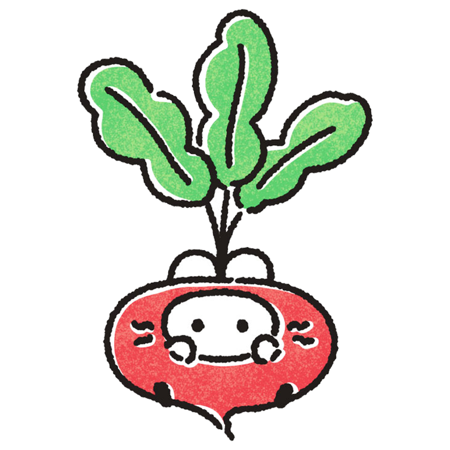
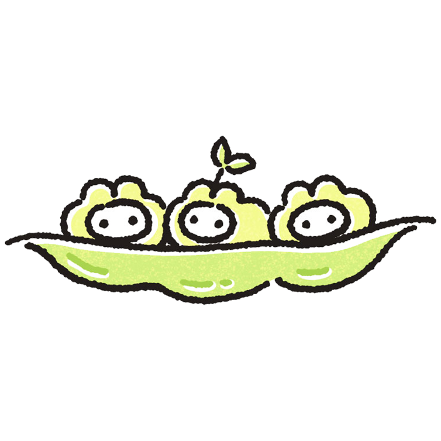
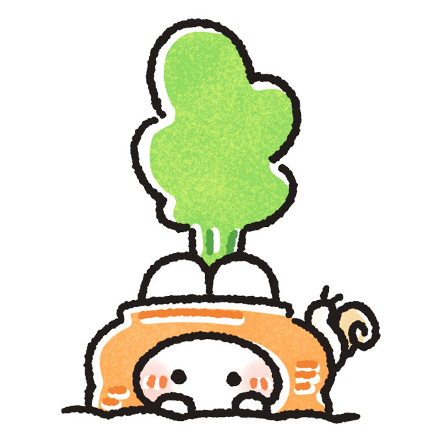
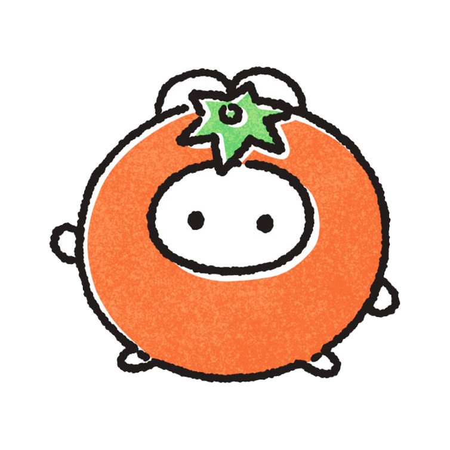

< 햄스터 케어 팁 >
아래의 햄스터들을 각각 눌러보세요!
햄스터들을 키우기 위한 팁들을 알려드릴게요!





적절한 거주 공간 제공하기
케이지 크기
: 햄스터는 활동적인 동물이므로 충분한 공간이 필요합니다. 최소한의 케이지 크기는 60cm x 30cm x 30cm 이상이어야 합니다.
케이지 높이
: 케이지의 높이는 햄스터가 여러 층을 사용할 수 있도록 충분히 높아야 합니다. 하지만 너무 높으면 떨어질 위험이 있으므로 주의해야 합니다.
바닥재
: 케이지 바닥에는 햄스터가 파묻고 탐험할 수 있는 박스 또는 패드를 놓아주세요.
햄스터 하우스
: 햄스터는 자신만의 안전한 공간을 필요로 합니다. 작은 집이나 터널을 제공하여 햄스터가 숨을 수 있게 해주세요.
소재 선택
: 플라스틱보다는 나무나 종이와 같은 자연 소재를 사용하는 것이 좋습니다.
휠과 장난남
: 운동 휠: 햄스터가 밤에 활동적으로 뛰어놀 수 있도록 적절한 크기의 휠을 제공해야 합니다.
올바른 사료와 물 제공하기
고급 사료
: 햄스터는 곡류와 씨앗을 기본으로 하는 사료를 먹습니다. 전문적인 햄스터 사료를 구매하여 제공해주세요.
신선한 물
: 항상 깨끗하고 신선한 물을 제공해주세요. 물병을 사용하여 물이 얼지 않도록 주의하세요.
추가적인 먹이 제공
: 햄스터에게 소량의 신선한 채소와 과일을 제공할 수 있습니다.
당근, 브로콜리, 사과 등의 신선한 먹이는 영양 보충에 도움이 됩니다.
다만, 너무 많은 양을 주지 않도록 주의합니다.
또한, 햄스터에게는 소량의 단백질도 필요합니다. 삶은 달걀, 밀웜, 치즈 등을 간식으로 제공할 수 있습니다.
올바른 급여방법
:하루에 한두 번 정해진 시간에 먹이를 주는 것이 좋습니다.
이는 햄스터에게 규칙적인 식습관을 형성해 줍니다.
햄스터가 하루 동안 먹을 수 있는 양을 제공해야 하며,
먹이를 너무 많이 주어 비만이 되지 않도록 합니다.
햄스터는 본능적으로 먹이를 저장하는 습성이 있으므로,
케이지 구석이나 은신처에 먹이를 숨길 수 있습니다. 이를 고려하여 먹이 양을 조절합니다.
정기적인 청소와 관리
케이지 청소
: 매주 한 번은 케이지를 청소하고, 사용된 바닥재를 교체하세요.
청소용품 사용
: 케이지 청소에는 햄스터에게 안전한 세제를 사용해야 합니다.
일반적으로는 따뜻한 물과 부드러운 비누를 사용해도 좋습니다.
청소 후에는 세제를 완전히 헹궈내고 건조시켜야 합니다.
햄스터 활동 장소
: 햄스터는 매일 규칙적인 운동과 활동이 필요합니다. 햄스터가 탐험할 수 있는 활동장소를 제공해주세요.
온도와 습도관리
: 햄스터는 극단적인 온도 변화에 민감합니다.
적절한 실내 온도(18-24°C)와 습도(40-60%)를 유지하여 쾌적한 환경을 제공합니다.
빛과 소음
: 햄스터의 케이지는 직사광선이 직접 닿지 않는 곳에 두고,
소음이 적은 환경을 제공해야 합니다.
햄스터는 스트레스에 민감하므로,
조용하고 안정된 장소에 케이지를 놓는 것이 좋습니다.
건강과 행동 체크
건강 검진
: 햄스터의 건강을 유지하기 위해 정기적으로 수의사를 방문하세요.
행동 관찰
: 햄스터의 일상적인 행동을 관찰하여 건강 문제나 스트레스 증상을 조기에 발견하세요.
정기적인 수의사 방문
: 최소한 6개월에 한 번은 수의사를 방문하여 건강 검진을 받습니다.
예방 접종이나 기생충 관리 등도 수의사와 상의하여 필요한 경우 진행합니다.
안전한 장난감 제공
: 햄스터에게 안전한 장난감을 제공하여 신체적, 정신적 자극을 줍니다.
장난감이 깨지거나 햄스터에게 해를 끼칠 수 있는 재질이 아닌지 점검합니다.
소통과 관심을 통한 긍정적인 환경 제공하기
손길과 대화
: 햄스터가 사람에게 긍정적인 경험을 할 수 있도록 손길을 주고, 조용한 대화를 해주세요.
환경 조건
: 햄스터의 주변 환경을 편안하게 유지하고, 급격한 온도 변화나 소음을 피해주세요.
규칙적인 상호작용
: 매일 일정 시간을 정해 햄스터와 상호작용합니다.
이는 햄스터에게 안정감을 주고 스트레스를 줄이는 데 도움이 됩니다.
다양한 자극 제공
: 햄스터에게 다양한 장난감과 놀이기구를 제공하여 신체적, 정신적 자극을 줍니다.
이는 햄스터의 지루함을 덜어주고, 건강한 활동을 촉진합니다.
케이지 외에도 안전하게 탐험할 수 있는 공간을 제공하여
햄스터가 새로운 환경을 탐험하며 활동할 수 있도록 합니다.